Study notes: Module 2, electromagnetic induction and Maxwell’s equations
7.1.1 Ohm’s law
Before you start
- Current density $\mathbf J$ is current per unit area, perpendicular to the flow.
- Line integral of $\mathbf E$ gives potential difference: $V=-\int\mathbf E\cdot d\mathbf l$.
- Gauss’s law in the form $\nabla\cdot\mathbf E=\rho/\epsilon_0$; divergence of a curl is zero.
Recall. From Class 12: $V=IR$, and for a wire $R=\rho\ell/A$, where $\rho$ is the resistivity.
Re-derive.
- Take a uniform cylinder of length $\ell$ and area $A$, with potential difference $V$ between its ends. The field is $E=V/\ell$ (uniform, Example 7.3).
- The current density is $J=I/A$.
- From $V=IR$ and $R=\rho\ell/A$: $I=VA/(\rho\ell)$.
- Therefore $J=I/A=V/(\rho\ell)=E/\rho=\sigma E$, with $\sigma=1/\rho$.
Saved. $\mathbf J=\sigma\mathbf E$ (Eq. 7.3).
1. Force per unit charge and current density
To make a current flow, something has to push on the charges. Call the push per unit charge $\mathbf f$. How fast the charges move depends on the material, and for most substances the current density is proportional to the push:
$\sigma$ is the conductivity. The handbooks list the resistivity $\rho=1/\sigma$ instead. Table 7.1 in the book gives values: silver $1.59\times10^{-8}\ \Omega$m, glass $10^{9}$–$10^{14}\ \Omega$m. The book takes metals as perfect conductors ($\sigma=\infty$) and insulators as $\sigma=0$.
In an electromagnetic setting the push is the Lorentz force per unit charge, $\mathbf f=\mathbf E+\mathbf v\times\mathbf B$. So
The charges usually drift slowly, so $\mathbf v\times\mathbf B$ is negligible. What is left is Ohm’s law.
The book warns that $\mathbf E$ is not zero inside a conductor carrying a current. The statement $\mathbf E=\mathbf 0$ inside a conductor (Section 2.5.1) is for stationary charges. With a current, the field needed to drive it is $\mathbf E=\mathbf J/\sigma$, which is very small in a good metal. That is why connecting wires in a circuit can be treated as equipotentials.
2. Resistance of a cylinder (Example 7.1)
Take a cylinder of cross-sectional area $A$ and length $L$, with conductivity $\sigma$, held at potential difference $V$ between its ends (Fig. 7.1). The cross section need not be circular, as long as it is the same all the way along.
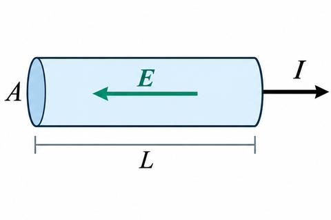
The field inside is uniform (proved in section 5 below). Then $\mathbf J=\sigma\mathbf E$ is uniform too, and the current is
using $E=V/L$ for a uniform field.
3. Resistance of coaxial cylinders (Example 7.2)
Two long coaxial metal cylinders of radii $a$ and $b$, separated by a material of conductivity $\sigma$, have potential difference $V$. Let the inner cylinder carry charge $\lambda$ per unit length.
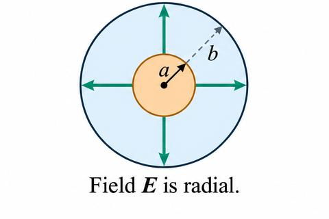
The field between them is
Two calculations:
- Current through a surface enclosing the inner cylinder: $I=\sigma\int\mathbf E\cdot d\mathbf a=\frac{\sigma}{\epsilon_0}\lambda L$.
- Potential difference: $V=-\int_b^a\mathbf E\cdot d\mathbf l=\frac{\lambda}{2\pi\epsilon_0}\ln\frac{b}{a}$.
Eliminating $\lambda$ gives $I=\frac{2\pi\sigma L}{\ln(b/a)}V$.
4. From current to resistance
In both examples the current is proportional to the potential difference between the electrodes. That is the circuit form of Ohm’s law:
$R$ depends only on geometry and $\sigma$. From Example 7.1, $R=L/\sigma A$. From Example 7.2, $R=\frac{\ln(b/a)}{2\pi\sigma L}$. The unit is the ohm, $\Omega$: an ohm is a volt per ampere.
Doubling $V$ doubles $\mathbf E$ (because $\mathbf E=\mathbf J/\sigma$ and the material is ohmic), which doubles $\mathbf J$ and so $I$.
5. Example 7.3: the field in the resistor is uniform
Inside the cylinder, $V$ satisfies Laplace’s equation, because $\nabla\cdot\mathbf J=0$ for steady currents. The boundary conditions are: $V=0$ at the left end, $V=V_0$ at the right end, and $\partial V/\partial n=0$ on the curved surface (no current leaks out). Guess $V(z)=V_0z/L$. It satisfies Laplace’s equation and all three conditions. Laplace’s equation with these boundary conditions has only one solution, so this is it. Its field $\mathbf E=-\nabla V=-(V_0/L)\hat{\mathbf z}$ is uniform.
6. Charge on a steady current (Eq. 7.5)
For a steady current in a uniform conductor, combine Ohm’s law with the fact that $\nabla\cdot\mathbf J=0$ for steady flow:
So there is no charge density inside the conductor. Any unbalanced charge sits on the surface. Laplace’s equation therefore holds inside a homogeneous ohmic material that carries a steady current, and the methods of Chapter 3 can be used for $V$.
Recall. From Class 12: power $P=VI$, and with $V=IR$, $P=I^2R$.
Re-derive.
- Work per unit charge across a resistor is $V$.
- Charge passing per unit time is $I$.
- So energy per unit time is $VI$. Substituting $V=IR$ gives $I^2R$.
Saved. $P=VI=I^2R$ (Eq. 7.7).
7. Joule heating (Eq. 7.7)
The electric force does work on the charges, and collisions turn that work into heat. The work per unit charge is $V$ and the charge passing per unit time is $I$, so the power is
With $I$ in amperes and $R$ in ohms, $P$ is in watts.
8. Where Ohm’s law comes from (Eq. 7.6, background)
Charges accelerate between collisions and lose their speed at each collision. Their average velocity is therefore steady. With $n$ molecules per unit volume, $f$ free electrons per molecule, charge $q$ and mass $m$, and a mean free path $\lambda$, the classical estimate of the current density is
The book stresses that this classical (Drude) picture is not the quantum theory of conduction (footnote 2). It gets the trend right: conductivity grows with the number of moving charges and falls with temperature.
7.1.2 Electromotive force
Before you start
- Ohm’s law $\mathbf J=\sigma\mathbf E$ and the circuit form $V=IR$ (Section 7.1.1).
- A line integral around a closed loop; for an electrostatic field, $\oint\mathbf E\cdot d\mathbf l=0$.
1. The puzzle
Take a battery, a light bulb and two wires, joined into a loop. The current is the same at every point of the loop. But the only obvious push on the charges is inside the battery. Why do charges in the bulb’s wire know to move at the same time and at the same speed as charges at the battery?
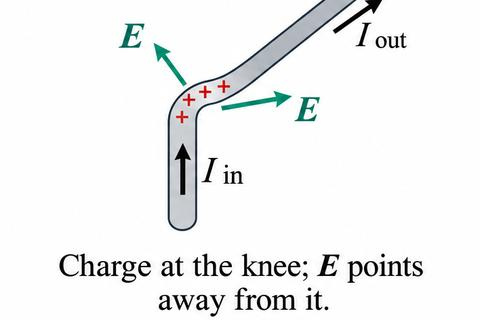
The answer is that the current cannot be unequal for long. Imagine the current entering a bend is larger than the current leaving it. Charge then piles up at the knee. The field from that extra charge points away from the knee, and it slows the incoming current and speeds up the outgoing current. This continues until the two currents are equal. The system corrects itself so quickly that for practical purposes the current is the same everywhere, even at radio frequencies.
Recall. From Class 12: the emf of a source is the work done per unit charge by the source in carrying charge round the circuit.
Re-derive.
- The source force per unit charge is $\mathbf f_s$. Its work per unit charge over one trip round the loop is $\oint\mathbf f_s\cdot d\mathbf l$.
- The electrostatic field does no net work round a closed loop, since $\oint\mathbf E\cdot d\mathbf l=0$.
- So only the source force remains.
Saved. $\mathcal E=\oint\mathbf f\cdot d\mathbf l=\oint\mathbf f_s\cdot d\mathbf l$ (Eq. 7.9).
2. Two forces drive the charges
There are two forces per unit charge acting on the charges:
- the source force $\mathbf f_s$, which acts only in the source region (for example, the chemistry inside a battery);
- the electrostatic force $\mathbf E$, which acts everywhere in the circuit and carries the influence of the source to the rest of the loop.
The total force per unit charge is
The source force can come from many mechanisms: a chemical reaction in a battery, mechanical pressure in a piezoelectric crystal, a temperature gradient in a thermocouple, light in a photoelectric cell, or charge carried on a belt in a Van de Graaff generator. The mechanism does not matter. What matters is the line integral of the total force around the circuit.
The two forms agree because $\oint\mathbf E\cdot d\mathbf l=0$ for electrostatic fields. So only the source force contributes.
The name is misleading. Emf is not a force; it is the line integral of a force per unit charge, so its unit is the volt. Some people prefer “electromotance”, but the book keeps the established name.
3. Potential difference across an ideal battery
Inside an ideal battery (no resistance), the net force on a charge is zero. So $\mathbf f_s+\mathbf E=\mathbf 0$, that is $\mathbf E=-\mathbf f_s$ inside the battery. The potential difference between its terminals $a$ and $b$ is
The line integral can be taken round the whole loop, because $\mathbf f_s$ is zero outside the battery. So an ideal battery holds its terminals at a voltage equal to its emf. A 6 V battery holds the positive terminal 6 V above the negative one.
Inside the battery, $\mathbf f_s$ drives the current in the direction opposite to $\mathbf E$. The electrostatic field drives the current around the rest of the circuit.
A real battery has internal resistance $r$. Its terminal potential difference is $\mathcal E-Ir$ when a current $I$ flows (footnote 4).
Recall. From Class 12: a real cell of emf $\mathcal E$ and internal resistance $r$ gives terminal voltage $V=\mathcal E-Ir$ when current $I$ flows.
Re-derive.
- An ideal source (no resistance) gives terminal voltage $V=\mathcal E$ (Eq. 7.10).
- In a real source the current $I$ flows through the internal resistance $r$, so there is a potential drop $Ir$ inside the source (Ohm’s law across $r$).
- The terminal voltage is the emf less this drop.
Saved. $V_{\text{terminal}}=\mathcal E-Ir$ (footnote 4).
4. An analogy (footnote 5)
A circuit is like a closed system of water pipes. Gravity plays the role of the electrostatic field: it pulls water downward, and water flows from high to low. A pump lifts water against gravity, and it plays the role of the battery. In this picture “height” is the analogue of voltage.
5. Why emf is not a force
The integral $\oint\mathbf f\cdot d\mathbf l$ has units of force per unit charge times length, which is energy per unit charge, that is volts. So a voltage is what you get, not a force. Remember this when you read the book’s comments on the name.
7.1.3 Motional emf and the flux rule
Before you start
- Magnetic force on a moving charge: $\mathbf F=q\mathbf v\times\mathbf B$.
- Flux of a field through a surface: $\Phi=\int\mathbf B\cdot d\mathbf a$.
- Divergence and curl, and Stokes’ theorem (used in the eddy-current example).
1. A generator: a wire moving through a field
Generators work because a wire moving through a magnetic field gets pushed. Figure 7.10 is a primitive model: a rectangular loop whose left side lies in a uniform field $\mathbf B$ pointing into the page. The loop is pulled to the right at speed $v$, and a resistor $R$ on the right side represents whatever the current drives (a bulb, say).
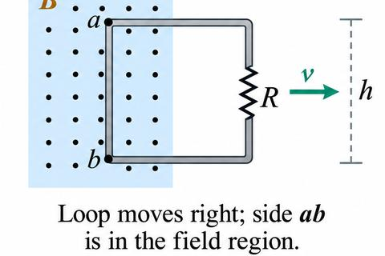
Each mobile charge in the left side moves with the wire at velocity $\mathbf v$ to the right. The magnetic force on it is $q\mathbf v\times\mathbf B$. The velocity is to the right and $\mathbf B$ is into the page, so the force is upward. Its vertical component, $qvB$, drives charge around the loop in the clockwise direction. The emf is the line integral of the magnetic force per unit charge:
$h$ is the length of the side in the field. The top and bottom sides, $bc$ and $ad$, contribute nothing, because the force on a charge there is perpendicular to the wire.
Two points about the integral. First, it is taken at one instant: a snapshot of the loop. The direction of $d\mathbf l$ on side $ab$ is straight up, even though the loop is moving to the right. Second, this is just how emf is defined, so the sign has to be read off from the definition.
Recall. From Class 12: a conductor of length $l$ moving at speed $v$ perpendicular to a field $B$ has emf $Blv$.
Re-derive.
- The magnetic force on a charge $q$ is $q\mathbf v\times\mathbf B$. So the force per unit charge is $\mathbf v\times\mathbf B$, with magnitude $vB$, directed along the wire.
- Integrate this along the moving side of length $h$: $\oint\mathbf f_{\text{mag}}\cdot d\mathbf l=vBh$.
Saved. $\mathcal E=vBh$ (Eq. 7.11).
2. Who is doing the work?
The magnetic force does no work on a charge, because it is always perpendicular to the velocity. Yet energy is delivered to the resistor. The answer is subtle.
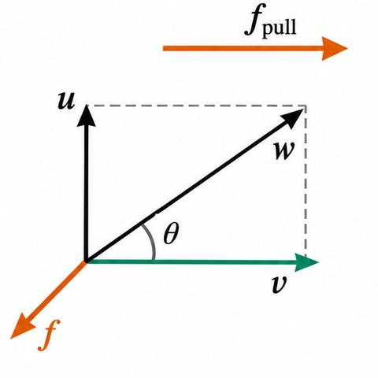
The current means the charges move up the left side with a velocity $\mathbf u$ in addition to the horizontal velocity $\mathbf v$. The resultant velocity is $\mathbf w=\mathbf v+\mathbf u$. The magnetic force $q\mathbf w\times\mathbf B$ has a leftward component $quB$, which opposes the motion along the wire. To keep the current going, the person pulling the loop must push to the right with a force per unit charge $f_{\text{pull}}=uB$. That force is transmitted by the structure of the wire.
The charge moves along the slanted path of length $h/\cos\theta$. The work per unit charge done by the person is
The work per unit charge equals the emf. The two line integrals follow different paths: the emf is along the wire at one instant, and the work is along the charge’s actual path (Fig. 7.12). The forces are different too: the magnetic force does the emf but no work, and the pulling force does the work but contributes nothing to the emf.
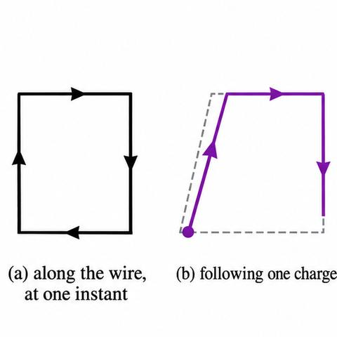
3. The flux rule
The area of the loop inside the field region is $hx$, so the flux through the loop is
For this loop, $\Phi=Bhx$. As the loop moves right, $x$ decreases, so $dx/dt\lt 0$ and
Compare with Eq. 7.11: the emf is $vBh$, which is minus the rate of change of flux. This is general.
It applies to loops of any shape moving in any direction through any magnetic field, even if the loop changes shape as it moves.
Recall. From Class 12: the induced emf equals minus the rate of change of magnetic flux, $\mathcal E=-d\Phi/dt$.
Re-derive.
- For the loop of Fig. 7.10, the flux is $\Phi=Bhx$, where $x$ is the length of the loop inside the field.
- As the loop moves right, $x$ decreases at speed $v$, so $dx/dt=-v$.
- Therefore $d\Phi/dt=-Bhv$, and $-d\Phi/dt=vBh$, which is the motional emf of Eq. 7.11.
Saved. $\mathcal E=-d\Phi/dt$ (Eq. 7.13).
4. Proof of the flux rule
Look at the loop at time $t$ and again a short time $dt$ later (Fig. 7.13). Use a surface $\mathcal S$ bounded by the loop at time $t$, and a surface $\mathcal S'$ bounded by the loop at $t+dt$. The change in flux is the flux through the thin ribbon that joins the old loop to the new one:
Take a point $P$ on the loop. In time $dt$ it moves to $P'$. Let $\mathbf v$ be the velocity of the wire and $\mathbf u$ the velocity of a charge down the wire, so $\mathbf w=\mathbf v+\mathbf u$ is the velocity of a charge at $P$. The element of area of the ribbon swept out by the segment $d\mathbf l$ is
Substituting, $\frac{d\Phi}{dt}=\oint\mathbf B\cdot(\mathbf v\times d\mathbf l)$. Because $\mathbf u$ is parallel to $d\mathbf l$, $\mathbf v\times d\mathbf l$ may be replaced by $\mathbf w\times d\mathbf l$:
The last step uses the scalar triple product rule. Since $\mathbf w\times\mathbf B=\mathbf f_{\text{mag}}$, this is $-\oint\mathbf f_{\text{mag}}\cdot d\mathbf l=-\mathcal E$. That is the flux rule.
Signs. There is a sign ambiguity in both definitions. The direction of $d\mathbf l$ round the loop and the direction of $d\mathbf a$ must be linked by the right-hand rule. If the emf comes out negative, the current flows in the negative sense round the circuit.
5. A warning: the flux-rule paradox (Fig. 7.14)
The flux rule assumes the circuit is a single wire loop with one current path. If you throw a switch in a circuit like Fig. 7.14, moving from $a$ to $b$, the flux through the circuit doubles. But no conductor moves through a magnetic field, so there is no motional emf, and the ammeter reads zero. Switches, sliding contacts and extended conductors allow several current paths, and then the flux rule cannot be used directly.
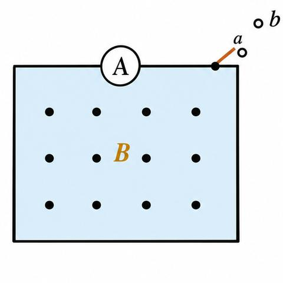
6. Example 7.4: the Faraday disk
A metal disk of radius $a$ spins with angular velocity $\omega$ about a vertical axis, in a uniform field $\mathbf B$ pointing up. A resistor joins the axle to a sliding contact at the rim.
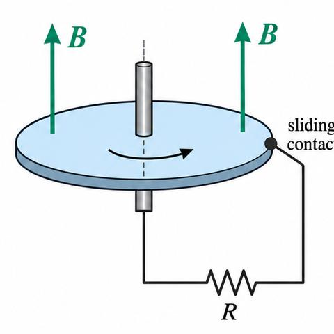
A point at distance $s$ from the axis moves with speed $v=\omega s$. The magnetic force per unit charge is $\mathbf f_{\text{mag}}=\mathbf v\times\mathbf B$, of magnitude $\omega sB$. The emf is the integral of this along a radius:
The current is $I=\mathcal E/R=\omega Ba^2/2R$. The flux rule cannot be used here, because the current spreads over the whole disk and there is no single path whose flux we can compute.
7. Eddy currents (Example 7.5)
Move a conductor through a non-uniform field and currents are induced inside it. These eddy currents oppose the motion, so the conductor feels a drag. The book works out one solvable case: a uniform, neutral spherical shell of conductivity $\sigma$, inner radius $R_1$, outer radius $R_2$, spinning with angular velocity $\boldsymbol\omega$ in a uniform field $\mathbf B$.
In a conductor at rest the charge density is zero. But a conductor moving through a field has the velocity term in its current law, $\mathbf J=\sigma(\mathbf E+\mathbf v\times\mathbf B)$ (Eq. 7.2). Taking the divergence, and using Gauss’s law and the continuity equation, gives in the steady state
Choose axes with $\mathbf B=B\hat{\mathbf z}$ and $\boldsymbol\omega=\omega\hat{\mathbf z}$. For a rigid rotating body $\mathbf v=\boldsymbol\omega\times\mathbf r$. With the BAC–CAB rule,
so $\rho=-2\epsilon_0\omega B$ (Eq. 7.16). The potential then satisfies Poisson’s equation $\nabla^2V=2\omega B$ in the shell (Eq. 7.17). There are compensating surface charges at the two boundaries.
Case (a): $\boldsymbol\omega$ parallel to $\mathbf B$. The radial current must vanish at both surfaces (Eq. 7.18). Solving gives $V=\frac{\omega B}{2}(x^2+y^2)+K$, so $\mathbf E=-\mathbf v\times\mathbf B$ (Eq. 7.22). The electric force cancels the magnetic force exactly, and there is no eddy current: $\mathbf J=\mathbf 0$.
Case (b): $\boldsymbol\omega$ perpendicular to $\mathbf B$. Take $\boldsymbol\omega=\omega\hat{\mathbf x}$ and $\mathbf B=B\hat{\mathbf y}$. Now $\rho=0$ and Laplace’s equation holds in the shell. The normal derivatives of $V$ at $R_1$ and $R_2$ are fixed, and the solution is $V=-\frac{\omega B}{2}xy+K$ in the shell. The eddy current follows from $\mathbf J=\sigma(\mathbf E+\mathbf v\times\mathbf B)$, and it is non-zero.
The book adds (footnote 10) that the convection current from the moving charge is negligible compared with the conduction current. The ratio is about $\epsilon_0\omega/\sigma$, which is tiny for aluminium at 100 rpm.
7.2.1 Faraday’s law
Before you start
- The flux rule from Section 7.1.3: $\mathcal E=-d\Phi/dt$ (Eq. 7.13).
- Flux $\Phi=\int\mathbf B\cdot d\mathbf a$, and Stokes’ theorem (the curl of $\mathbf E$ turns a line integral into a surface integral).
1. What Faraday did
In 1831 Faraday did three experiments. In each one a current flowed in a loop of wire.
- Experiment 1. He pulled the loop to the right through a magnetic field (Fig. 7.21a). The charges in the moving part of the loop feel the magnetic force $q\mathbf v\times\mathbf B$. This is motional emf, which we already know from Section 7.1.3. The flux rule gives it.
- Experiment 2. He moved the magnet to the left and held the loop still (Fig. 7.21b). The same current flowed. This makes sense, because only the relative motion matters. But now the loop is at rest. A charge at rest feels no magnetic force, so something else must push it.
- Experiment 3. Loop and magnet stayed still, and he changed the strength of the field with an electromagnet (Fig. 7.21c). The current flowed again.
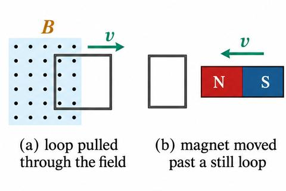
Faraday’s idea was this: a changing magnetic field induces an electric field. In Experiments 2 and 3 that electric field pushes the charges round the loop. In Experiment 1 the magnetic force does the pushing. The book uses the phrase “Faraday’s law” only for the induced electric field.
Recall. From Class 12: the induced current always opposes the change in flux that produces it.
Re-derive.
- Suppose the flux through a loop is increasing, so $d\Phi/dt>0$. Then $\mathcal E=-d\Phi/dt\lt 0$ (Eq. 7.26). The induced current sets up a field that opposes the increase.
- Suppose the flux is decreasing, so $d\Phi/dt\lt 0$. Then the induced field points the same way as the original field, opposing the decrease.
- Either way, the induced current tries to keep the flux the same.
Saved. The induced current opposes the change in flux (this gives direction only; Eq. 7.26).
2. Faraday’s law in two forms
Assume the emf round a loop equals the rate of change of the flux, as the experiments show:
Now write the flux as a surface integral, $\Phi=\int\mathbf B\cdot d\mathbf a$. The loop does not move in this step, so the time derivative acts on $\mathbf B$ only:
This is the integral form. To get the differential form, apply Stokes’ theorem to the left side, which gives $\int(\nabla\times\mathbf E)\cdot d\mathbf a$. Both sides are now integrals over the same surface. Because the surface can be anything, the integrands must match:
In a steady field ($\partial\mathbf B/\partial t=\mathbf 0$) this reduces to $\nabla\times\mathbf E=\mathbf 0$, the electrostatic rule.
3. One formula for all three experiments
Whenever the flux through a loop changes, for whatever reason, an emf $-d\Phi/dt$ appears in the loop.
The book does not like calling Eq. 7.26 “Faraday’s law”, because it covers two different causes: a magnetic force on moving charges (Experiment 1) and an induced electric field (Experiments 2 and 3). When you solve a problem, first decide which cause applies.
4. Example 7.6: a magnet passing through a ring
A long cylindrical magnet of length $L$ and radius $a$ has uniform magnetization $\mathbf M$ along its axis. It moves at constant speed through a ring of slightly larger diameter (Fig. 7.22). Follow the flux through the ring:
- Far away, the flux through the ring is zero.
- As the leading end enters, the flux rises to $\mu_0M\pi a^2$ (inside the magnet $\mathbf B=\mu_0\mathbf M$).
- While the whole magnet is inside, the flux is constant, so $\mathcal E=0$.
- As the trailing end leaves, the flux falls back to zero.
So $\Phi$ rises, plateaus and falls (Fig. 7.23a), and $\mathcal E=-d\Phi/dt$ has two spikes of opposite sign (Fig. 7.23b). Lenz’s law gives the direction of each current pulse: the first spike is negative, so that pulse flows clockwise, and the second flows counterclockwise, as seen from the left.
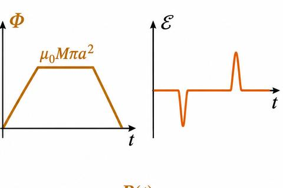
Footnote 14: Lenz’s law applies to motional emf too, but there the Lorentz force is often the quicker way to find the direction.
5. Example 7.7: the jumping ring
A solenoid with an iron core has a metal ring resting on top. Switch on the current and the ring flies off (Fig. 7.24).
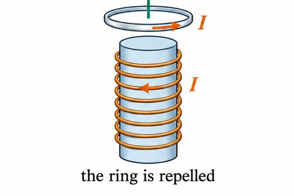
- Before switching on, the flux through the ring is zero.
- After switching on, flux appears through the ring, pointing up.
- Lenz’s law says the ring current must produce a field opposing this new flux, so the ring current is opposite to the solenoid current.
- Opposite currents repel, so the ring is pushed off. This is why the ring jumps.
Footnote 15 gives the literature on the jumping ring and the floating ring.
7.2.2 The induced electric field and the quasistatic approximation
Before you start
- Faraday’s law in integral and differential form (Eqs. 7.24, 7.25).
- Gauss’s law, and the Biot–Savart law from magnetostatics.
1. Field equations for an induced field
Suppose the only source of electric field is a changing magnetic field, with no charge anywhere ($\rho=0$). Then
Look at the magnetostatic pair $\nabla\cdot\mathbf B=0$ and $\nabla\times\mathbf B=\mu_0\mathbf J$. They have the same form, if you swap $\mu_0\mathbf J$ for $-\partial\mathbf B/\partial t$. So any method that finds a magnetic field from a current can also find an induced electric field from a changing $\mathbf B$.
2. The Biot–Savart form
This works in principle but is seldom the quickest route. When there is symmetry, use Faraday’s law on a loop. If $\mathbf E$ is tangent to the loop and the same size all the way round, the line integral is just $E$ times the length of the loop:
Recall. From Class 12: the emf round a loop is $-d\Phi/dt$.
Re-derive.
- For a circle of radius $s$, with $\mathbf E$ tangent and the same size all round: $\oint\mathbf E\cdot d\mathbf l=E\cdot2\pi s$.
- For uniform $\mathbf B$ over the circle: $\Phi=\pi s^2B$.
- So $E\cdot2\pi s=-\pi s^2\,dB/dt$, which gives $E=-\frac{s}{2}\frac{dB}{dt}$.
Saved. Eq. 7.28 for a circle.
3. Example 7.8: a uniform field over a disk
A uniform field $\mathbf B(t)$ points straight up through a circular region (Fig. 7.25). Find the induced field.
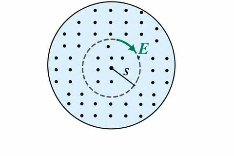
The field is azimuthal, and it has the same size on any circle centred on the axis. Take a circle of radius $s$: $E(2\pi s)=-\pi s^2\,dB/dt$. So $\mathbf E=-\frac{s}{2}\frac{dB}{dt}\hat{\boldsymbol\phi}$. If $B$ increases, $\mathbf E$ runs clockwise seen from above.
4. Example 7.9: the wheel
A line charge $\lambda$ sits on the rim of a wheel of radius $b$. The spokes do not conduct, so the wheel can turn. A field $\mathbf B_0$ fills the centre out to radius $a$, and it is switched off (Fig. 7.26).
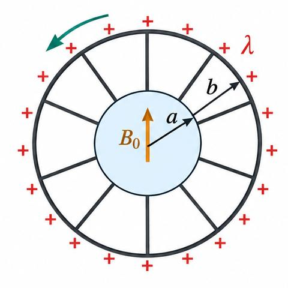
- Faraday’s law at radius $b$ gives the field at the rim: $\mathbf E=-\frac{a^2}{2b}\frac{dB}{dt}\hat{\boldsymbol\phi}$.
- The force on a piece $dl$ of rim is $\lambda E\,dl$, and its lever arm is $b$. The total torque is $N=-b\lambda\pi a^2\,dB/dt$.
- Lenz’s law says the wheel turns counterclockwise, seen from above.
- The total angular momentum given to the wheel is $\lambda\pi a^2bB_0$. It is the same however quickly the field is switched off.
The electric field makes the wheel turn. The magnetic field is zero where the charge sits, so it cannot push the charge.
5. The quasistatic approximation (Example 7.10)
To find a changing magnetic field we often use magnetostatic laws. That is accurate when the change is slow. The regime is called quasistatic. Electromagnetic waves need the full theory.
Example 7.10: an infinite straight wire carries $I(t)$. Its quasistatic field is $\mathbf B=\frac{\mu_0I}{2\pi s}\hat{\boldsymbol\phi}$. Apply Faraday’s law to the rectangular Ampèrian loop in Fig. 7.27.
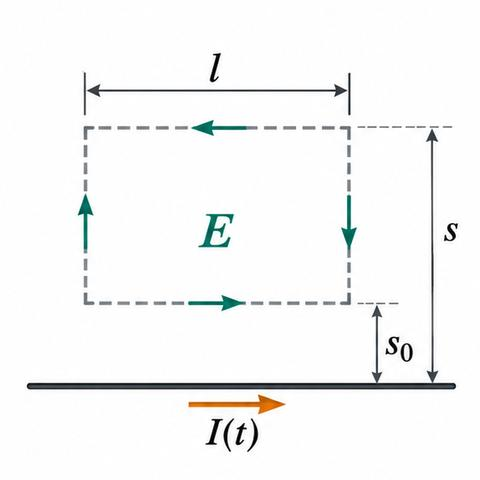
- Only the two sides parallel to the wire contribute, because $\mathbf E$ runs parallel to the wire.
- $E(s_0)l-E(s)l=-\frac{d}{dt}\int\mathbf B\cdot d\mathbf a=-\frac{\mu_0l}{2\pi}\frac{dI}{dt}\ln\frac{s}{s_0}$.
- So $\mathbf E(s)=\left[\frac{\mu_0}{2\pi}\frac{dI}{dt}\ln s+K\right]\hat{\mathbf z}$ (Eq. 7.29), with $K$ a constant.
$K$ depends on the whole history of $I(t)$. The answer grows without limit as $s\to\infty$, which cannot be right. The fault is the quasistatic approximation far away: news about a change travels at the speed of light, so far away $\mathbf B$ depends on the earlier current. The approximation holds only for
where $\tau$ is the time over which $I$ changes. So Eq. 7.29 fails at very large $s$.
Footnote 18: the example is artificial, because an infinite wire with equal current at every point is not like a real transmission line. Footnote 19 refers to real coaxial cables.
7.2.3 Inductance
Before you start
- The Biot–Savart law and the field of a solenoid, $B=\mu_0nI$ (Plus Two).
- The vector potential $\mathbf A$ (Eq. 5.66), and Stokes’ theorem.
- Faraday’s law (Section 7.2.1).
1. Mutual inductance
Take two loops of wire at rest (Fig. 7.30). Run a steady current $I_1$ round loop 1. It makes a magnetic field $\mathbf B_1$, and some of its field lines pass through loop 2. Call the flux of $\mathbf B_1$ through loop 2 $\Phi_2$.
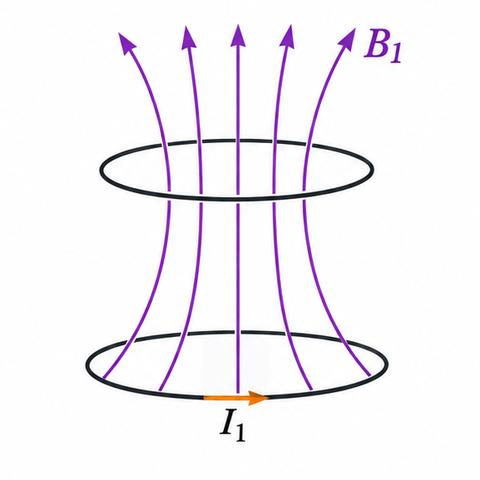
Recall. From Class 12: a changing current in one coil induces an emf in a second coil, through the mutual inductance $M$.
Re-derive.
- Biot–Savart: $\mathbf B_1=\frac{\mu_0}{4\pi}I_1\oint\frac{d\mathbf l_1\times\hat{\mathbf r}}{r^2}$.
- Only $I_1$ is not geometry, so $\mathbf B_1$ is proportional to $I_1$.
- So $\Phi_2=\int\mathbf B_1\cdot d\mathbf a_2$ is proportional to $I_1$. Call the constant $M_{21}$.
Saved. $\Phi_2=M_{21}I_1$ (Eq. 7.31).
2. The Neumann formula
Write the flux through the vector potential and use Stokes’ theorem:
Put in $\mathbf A_1=\frac{\mu_0I_1}{4\pi}\oint\frac{d\mathbf l_1}{r}$ (Eq. 5.66). Comparing with Eq. 7.31:
This depends only on the geometry. Swapping the loops does not change it, so $M_{21}=M_{12}$ (Eq. 7.33). From now on we write $M$.
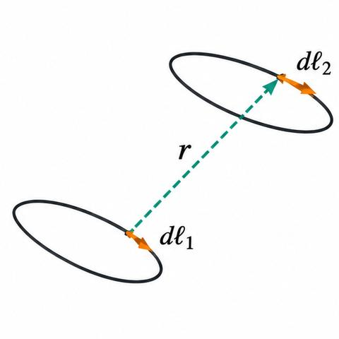
The formula is seldom used for real calculations, but it tells us that $M$ depends only on shapes and positions, and is the same whichever loop carries the current.
3. Example 7.11: a short solenoid inside a long one
A short solenoid (length $l$, radius $a$, $n_1$ turns per unit length) sits on the axis of a long solenoid (radius $b$, $n_2$ turns per unit length). Its field is messy and it puts a different flux through each turn of the long one. Instead, use $M_{21}=M_{12}$: send the current through the long solenoid and find the flux through the short one.
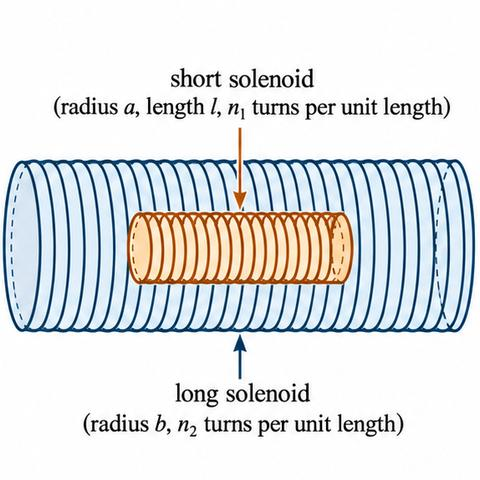
- Inside the long solenoid $B=\mu_0n_2I$, uniform over its cross-section.
- Flux through one turn of the short solenoid: $B\pi a^2=\mu_0n_2I\pi a^2$.
- The short solenoid has $n_1l$ turns, so the total flux is $\Phi=\mu_0\pi a^2n_1n_2Il$.
- So $M=\mu_0\pi a^2n_1n_2l$.
If the current in loop 1 changes, Faraday’s law gives an emf in loop 2:
This holds if the changes are slow enough for the quasistatic approximation. No wires join the loops.
4. Self-inductance
A changing current also induces an emf in its own loop. The flux through the loop is proportional to the current:
Recall. From Class 12: $B=\mu_0nI$ inside a long solenoid.
Re-derive (toroid).
- Draw a circle of radius $s$ inside the toroid, centred on its axis. $\mathbf B$ is tangent to it and the same size all round.
- Ampère’s law: $B(2\pi s)=\mu_0NI$, because the circle links all $N$ turns.
- So $B=\mu_0NI/2\pi s$ inside, and zero outside.
Saved. $B=\mu_0NI/2\pi s$.
$L$ is the self-inductance of the loop. It depends on the geometry and is always positive:
The unit is the henry, H = V·s/A. The minus sign makes it a back emf, which opposes any change in current.
5. Example 7.12: toroid
Toroid with a rectangular cross-section (inner radius $a$, outer radius $b$, height $h$) and $N$ turns.
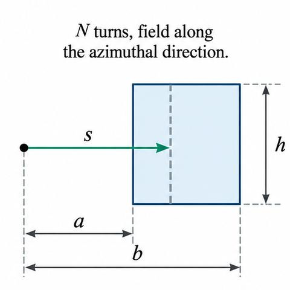
- $B=\mu_0NI/2\pi s$ (from the box above).
- Flux through one turn: $\displaystyle\int_a^b\frac{\mu_0NI}{2\pi s}\,h\,ds=\frac{\mu_0NIh}{2\pi}\ln\frac{b}{a}$.
- Total flux: $N$ times that. Using $\Phi=LI$: $L=\frac{\mu_0N^2h}{2\pi}\ln\frac{b}{a}$ (Eq. 7.37).
Inductance does for currents what mass does for velocities: a large $L$ makes the current hard to change.
6. Example 7.13: the RL circuit
Cutting a current suddenly makes $dI/dt$ huge, and the back emf gives a spark. Connecting a battery makes the current grow smoothly, because induction opposes the sudden increase (Fig. 7.35).
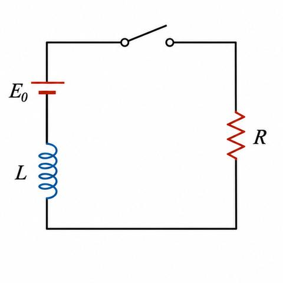
Recall. From Class 12: in an LR circuit the current grows exponentially, with time constant $L/R$.
Re-derive.
- Loop rule: $\mathcal E_0-L\,dI/dt=IR$.
- Write $I_\infty=\mathcal E_0/R$. Then $dI/(I-I_\infty)=-(R/L)\,dt$.
- Integrate from $I=0$ at $t=0$: $\ln\frac{I_\infty-I}{I_\infty}=-\frac{R}{L}t$.
- So $I=I_\infty\bigl(1-e^{-Rt/L}\bigr)$.
Saved. Eq. 7.38 below.
The time constant is $\tau=L/R$. At $t=\tau$ the current is about two-thirds of $\mathcal E_0/R$.
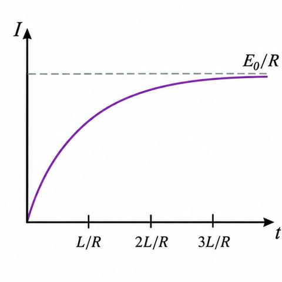
Footnote 21: $-L\,dI/dt$ is on the left of the loop equation, as part of the emf that drives the voltage across the resistor.
7.2.4 Energy in magnetic fields
Before you start
- Self-inductance $\mathcal E=-L\,dI/dt$ (Eq. 7.36) and the vector potential $\mathbf A$.
- Ampère’s law in differential form, $\nabla\times\mathbf B=\mu_0\mathbf J$ (magnetostatics), and the product rule for $\nabla\cdot(\mathbf A\times\mathbf B)$.
1. Work done against the back emf
Starting a current in a circuit takes work. This work is not lost as heat: it is stored, and it comes back when the current is switched off. The heat from resistors is separate and is lost. What is stored is the work done against the back emf.
Recall. From Class 12: power is energy per unit time; the power delivered to a circuit element is $P=VI$.
Re-derive.
- The work per unit charge against the back emf in one trip round the circuit is $-\mathcal E$. The minus sign means work done by us, against the emf.
- Charge passes per unit time $I$, so the work per unit time is $-\mathcal E I$.
- With $\mathcal E=-L\,dI/dt$: $\frac{dW}{dt}=-\mathcal EI=LI\frac{dI}{dt}$.
- Integrating from $I=0$ to $I$ gives $W=\tfrac12LI^2$.
Saved. $W=\tfrac12LI^2$ (Eq. 7.39).
The work per unit charge done against the back emf in one trip round the circuit is $-\mathcal E$; the minus sign records that it is work done by us. The charge passing per unit time is $I$, so
Integrating from zero to the final current $I$:
This depends on $L$ and the final current only, not on how long the process takes.
2. Energy in terms of the vector potential
The flux through the loop is $LI$ (Eq. 7.35). In terms of $\mathbf A$, $\Phi=\oint\mathbf A\cdot d\mathbf l$, so $LI=\oint\mathbf A\cdot d\mathbf l$. Then
This generalises immediately to a volume current:
3. Energy in terms of the field
Use Ampère’s law, $\mathbf J=\nabla\times\mathbf B/\mu_0$, to remove $\mathbf J$:
Integrate by parts with the product rule $\nabla\cdot(\mathbf A\times\mathbf B)=\mathbf B\cdot(\nabla\times\mathbf A)-\mathbf A\cdot(\nabla\times\mathbf B)$. Since $\mathbf B\cdot(\nabla\times\mathbf A)=\mathbf B\cdot\mathbf B$:
where $\mathcal S$ bounds the volume $\mathcal V$. The integral over $\mathcal V$ must cover the current. A larger region gives the same answer, because $\mathbf J=\mathbf 0$ outside, and the surface term gets smaller as the surface moves away (both $\mathbf A$ and $\mathbf B$ fall off). Take the volume to be all space: the surface term vanishes.
The energy density is $B^2/2\mu_0$. The energy is said to be “stored in the field”. Eq. 7.41 suggests instead that it is stored in the current, $\tfrac12\mathbf A\cdot\mathbf J$ per unit volume. The two pictures are bookkeeping: the total $W$ is what matters, and where it is “located” does not.
4. Why a magnetic field takes energy
Magnetic fields themselves do no work. But building a field takes energy because a changing $\mathbf B$ induces an electric field, and that field does work on the charges while $\mathbf B$ grows. There is no $\mathbf E$ at the start or at the end, but there is one while $\mathbf B$ is building up. The electrostatic and magnetic energy formulas are closely parallel (footnote 22 gives a check of Eq. 7.44):
5. Example 7.14: coaxial cable
A long coaxial cable carries current $I$ along the inner cylinder (radius $a$) and back along the outer one (radius $b$). The field between them is $\mathbf B=\frac{\mu_0I}{2\pi s}\hat{\boldsymbol\phi}$ (Fig. 7.40); outside, $\mathbf B=\mathbf 0$.
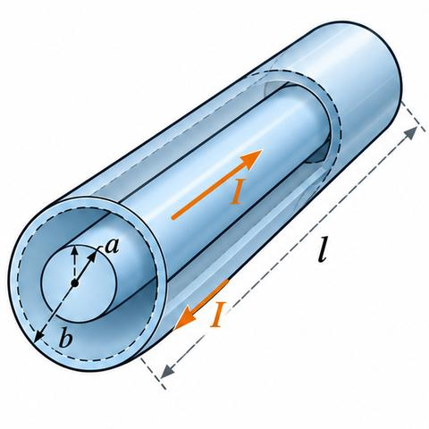
- Energy density: $\frac{1}{2\mu_0}\left(\frac{\mu_0I}{2\pi s}\right)^2=\frac{\mu_0I^2}{8\pi^2s^2}$.
- Shell of length $l$, radius $s$, thickness $ds$: volume $2\pi ls\,ds$, so the energy is $\frac{\mu_0I^2}{8\pi^2s^2}\,2\pi ls\,ds=\frac{\mu_0I^2l}{4\pi}\frac{ds}{s}$.
- Integrate from $a$ to $b$: $W=\frac{\mu_0I^2l}{4\pi}\ln\frac{b}{a}$.
- Compare with $W=\tfrac12LI^2$: $L=\frac{\mu_0 l}{2\pi}\ln\frac{b}{a}$. This gives $L$ when the flux is hard to find, because the current spreads over a surface or volume (footnote 23 notes the rectangular toroid of Ex. 7.12 is a short coaxial cable turned on its side).
7.3.1 Electrodynamics before Maxwell
Before you start
- Divergence and curl; the rule $\nabla\cdot(\nabla\times\mathbf A)=0$.
- Continuity equation $\nabla\cdot\mathbf J=-\partial\rho/\partial t$ (Eq. 5.29 in the book).
1. The four laws before Maxwell
Electromagnetic theory up to Maxwell consisted of four laws, one for the divergence and one for the curl of each field:
- (i) $\nabla\cdot\mathbf E=\rho/\epsilon_0$ (Gauss’s law);
- (ii) $\nabla\cdot\mathbf B=0$ (no name);
- (iii) $\nabla\times\mathbf E=-\partial\mathbf B/\partial t$ (Faraday’s law);
- (iv) $\nabla\times\mathbf B=\mu_0\mathbf J$ (Ampère’s law).
Recall. From Class 12: $\oint\mathbf B\cdot d\mathbf l=\mu_0I_{\text{enc}}$, the current enclosed by the loop.
Re-derive (long straight wire).
- Take a circle of radius $s$ about a long straight wire carrying current $I$. By symmetry $\mathbf B$ is tangent to the circle and has the same size all round.
- $\oint\mathbf B\cdot d\mathbf l=B\cdot2\pi s$, and the enclosed current is $I$.
- So $B\cdot2\pi s=\mu_0I$, giving $B=\mu_0I/2\pi s$ in the direction $\hat{\boldsymbol\phi}$.
Saved. $\mathbf B=\frac{\mu_0I}{2\pi s}\hat{\boldsymbol\phi}$.
2. The inconsistency
The divergence of a curl is always zero. Take the divergence of (iii): the left side is $\nabla\cdot(\nabla\times\mathbf E)=0$, and the right side is $-\partial(\nabla\cdot\mathbf B)/\partial t=0$ by (ii). Consistent. Now take the divergence of (iv):
The left side is zero, but the right side is not zero in general. For steady currents $\nabla\cdot\mathbf J=0$, so the law is consistent. For non-steady currents it is not. Ampère’s law therefore cannot be right beyond magnetostatics.
3. The capacitor check (Fig. 7.43)
Charge a capacitor through a wire. Apply Ampère’s law in integral form, $\oint\mathbf B\cdot d\mathbf l=\mu_0I_{\text{enc}}$, to a loop round the wire. The enclosed current depends on the surface you choose:
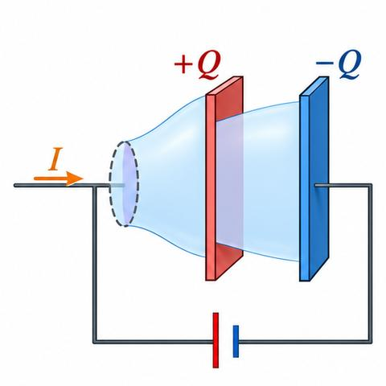
- The plane surface spanning the loop is pierced by the wire, so $I_{\text{enc}}=I$.
- A balloon-shaped surface that passes between the plates is pierced by no conduction current, so $I_{\text{enc}}=0$.
Both surfaces have the same boundary, so the answer should not depend on the surface. It does, so “the current enclosed by the loop” is ill-defined for non-steady currents. In magnetostatics the conflict never arises, because charge does not pile up on capacitor plates. This is the defect.
4. Where the defect comes from
Ampère’s law was derived from the Biot–Savart law. There was no reason to expect it to hold outside magnetostatics. In Maxwell’s time there was no experimental evidence against it; the flaw was theoretical, and Maxwell repaired it by theory. Section 7.3.2 gives the repair.
7.3.2 How Maxwell fixed Ampère’s law
Before you start
- Ampère’s law (Section 7.3.1) and the continuity equation.
- Gauss’s law and the capacitor: $Q=CV$, $E=\sigma/\epsilon_0$ between plates (Plus Two).
1. The fix
The offending term in Eq. 7.45 is the charge term. By the continuity equation and Gauss’s law:
So adding $\mu_0\epsilon_0\,\partial\mathbf E/\partial t$ to Ampère’s law makes the divergence of the right side vanish:
In magnetostatics the added term is zero, so nothing changes there. Its real effect is in waves (Chapter 9).
Maxwell’s own motive was an ether model, now discredited. The argument from charge conservation is far more compelling (footnote 24 gives the history).
Apart from the consistency argument, the added term has aesthetic appeal: a changing magnetic field induces an electric field (Faraday), so a changing electric field induces a magnetic field. The experiments of Hertz in 1888 on electromagnetic waves gave the real confirmation (see footnote 25 on the word “induce”).
2. Displacement current
The name is misleading. $\epsilon_0\partial\mathbf E/\partial t$ is not a flow of charge; it is simply the term added to $\mathbf J$ in Ampère’s law. In integral form:
Recall. From Class 12: for a parallel-plate capacitor, $E=\sigma/\epsilon_0$ between the plates, and $Q=CV$.
Re-derive.
- With plate charge $Q$ and area $A$: $\sigma=Q/A$, so $E=Q/\epsilon_0A$ between the plates.
- Differentiate: $\frac{\partial E}{\partial t}=\frac{1}{\epsilon_0A}\frac{dQ}{dt}=\frac{I}{\epsilon_0A}$, since $dQ/dt$ is the charging current $I$.
- So the displacement current density between the plates is $\epsilon_0\partial E/\partial t=I/A$.
Saved. Used in the capacitor check below (Eq. 7.48).
3. Capacitor check
Let the plates be close together, so that $E=Q/\epsilon_0A$ (the book’s calculation is simpler this way). Then $\partial E/\partial t=I/\epsilon_0A$ between the plates.
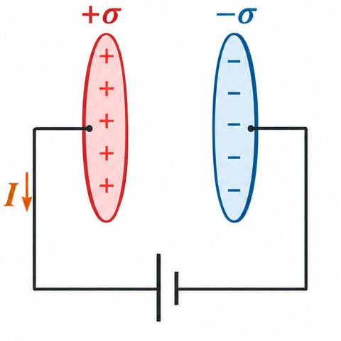
- Flat surface (it cuts the wire, and lies outside the gap between the plates): $E=0$ on it, and $I_{\text{enc}}=I$, so the displacement term is zero.
- Balloon surface (it passes between the plates, and the wire does not pierce it): $I_{\text{enc}}=0$, but $\int(\partial\mathbf E/\partial t)\cdot d\mathbf a=I/\epsilon_0$, so the displacement term is $\mu_0\epsilon_0\cdot I/\epsilon_0=\mu_0I$.
Both surfaces give $\mu_0I$. On the flat surface the current is conduction; on the balloon surface it is displacement.
Recall. From Class 12: the charge on a capacitor is $Q=CV$, and charge flows in the wires.
Re-derive.
- Current in the wire is $I=dQ/dt$.
- Between the plates, the field changes as the charge changes; the field flux is $\Phi_E=EA$.
Saved. $\frac{d\Phi_E}{dt}=I/\epsilon_0$ (used in Eq. 7.48).
4. Example 7.15: concentric shells
Two concentric spherical metal shells carry charge $Q(t)$ on the inner one and $-Q(t)$ on the outer one. An ohmic material of conductivity $\sigma$ fills the space between them, so a radial current flows.
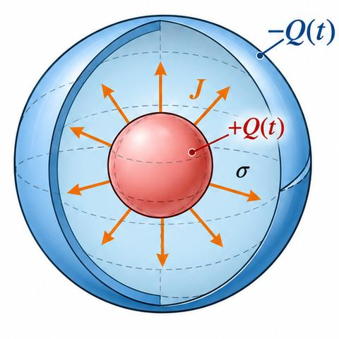
- Conduction current: $\mathbf J=\sigma\mathbf E=\frac{\sigma Q}{4\pi\epsilon_0r^2}\hat{\mathbf r}$, with total current $I=-\dot Q=\frac{\sigma Q}{\epsilon_0}$.
- Symmetry forbids any magnetic field in the radial direction, and $\nabla\cdot\mathbf B=0$ gives $\oint\mathbf B\cdot d\mathbf a=B(4\pi r^2)=0$. So $\mathbf B=\mathbf 0$ (the problem looks like it should have a magnetic field, but it does not).
- Displacement current: $\mathbf J_d=\epsilon_0\frac{\partial\mathbf E}{\partial t}=\frac{\dot Q}{4\pi r^2}\hat{\mathbf r}=-\frac{\sigma Q}{4\pi\epsilon_0r^2}\hat{\mathbf r}$.
- The displacement current exactly cancels the conduction current (Eq. 7.46), so $\nabla\times\mathbf B=\mathbf 0$ and $\mathbf B=\mathbf 0$ everywhere.
The point is that this is not a static configuration, and Ampère’s law without the displacement term would wrongly predict a field.
7.3.3 Maxwell’s equations
Before you start
- The four laws (Section 7.3.1) and the Ampère–Maxwell law (Eq. 7.46).
- Gauss’s law in integral form: $\oint\mathbf E\cdot d\mathbf a=Q_{\text{enc}}/\epsilon_0$ (Plus Two).
Recall. From Class 12: the total flux of $\mathbf E$ out of a closed surface is $Q_{\text{enc}}/\epsilon_0$.
Re-derive (divergence form).
- Shrink the closed surface onto a point: flux per unit volume is the divergence.
- So $\oint\mathbf E\cdot d\mathbf a=\int(\nabla\cdot\mathbf E)\,d\tau$, and $Q_{\text{enc}}=\int\rho\,d\tau$.
- Since the volume is arbitrary, $\nabla\cdot\mathbf E=\rho/\epsilon_0$.
Saved. Maxwell’s equation (i), Eq. 7.49.
1. The complete set
Putting Faraday’s law and the Ampère–Maxwell law together gives Maxwell’s equations:
With the Lorentz force $\mathbf F=q(\mathbf E+\mathbf v\times\mathbf B)$ (Eq. 7.50) these contain all of classical electrodynamics, apart from the properties of matter. The continuity equation $\nabla\cdot\mathbf J=-\partial\rho/\partial t$ (Eq. 7.51) follows from them: take the divergence of the last equation.
Written with fields on the left and sources on the right (Eq. 7.52):
This shows that fields are produced by charges and currents. A changing field is itself caused by charges and currents somewhere else.
Maxwell’s equations are differential equations, so they need boundary conditions. These are usually obvious from the problem; for example, fields vanish far from a localised charge distribution (footnote 29).
Footnote 28: Maxwell wrote about twenty equations, including potentials. Heaviside gave the four-equation form now known as Maxwell’s equations.
7.3.5 Maxwell’s equations in matter
Before you start
- Electric polarization $\mathbf P$ (dipole moment per unit volume) and bound charge $\rho_b=-\nabla\cdot\mathbf P$ (Eq. 4.12).
- Magnetization $\mathbf M$ and bound current $\mathbf J_b=\nabla\times\mathbf M$ (Eq. 6.13).
1. Bound charge and current
Inside polarized matter there are bound charges and currents you cannot control. It is cleaner to write the equations in terms of free charges and currents only.
- Electric polarization gives bound charge: $\rho_b=-\nabla\cdot\mathbf P$ (Eq. 7.56).
- Magnetization gives bound current: $\mathbf J_b=\nabla\times\mathbf M$ (Eq. 7.57).
There is one new feature when fields change in time. A changing polarization moves bound charge, which is a current:
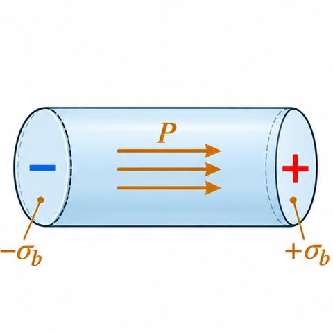
Recall. From Class 12: a dielectric slab in a capacitor has polarization $\mathbf P$, and the surface of the dielectric carries bound charge.
Re-derive (end charges of a polarized tube).
- Each unit of area at the end of a tube of polarized material carries the charge that the polarization pushes out of it: $\sigma_b=\mathbf P\cdot\hat{\mathbf n}$.
- For $\mathbf P$ along the axis, $\sigma_b=+P$ at one end and $-P$ at the other.
- If $P$ increases by $dP$, the charge on each end changes by $\sigma_b$, and the net flow across unit area is $\partial P/\partial t$.
Saved. Polarization current $\mathbf J_p=\partial\mathbf P/\partial t$ (Eq. 7.58).
This polarization current is not the bound current $\mathbf J_b$. $\mathbf J_b$ comes from magnetization (spin and orbital motion of electrons); $\mathbf J_p$ is the motion of charge when $\mathbf P$ changes.
Check: $\nabla\cdot\mathbf J_p=\partial(\nabla\cdot\mathbf P)/\partial t=-\partial\rho_b/\partial t$, so $\mathbf J_p$ keeps bound charge conserved. A changing magnetization causes no equivalent charge flow, because $\nabla\cdot(\nabla\times\mathbf M)\equiv0$.
2. Total charge and current
Gauss’s law becomes $\nabla\cdot\mathbf E=(\rho_f-\nabla\cdot\mathbf P)/\epsilon_0$, which is $\nabla\cdot\mathbf D=\rho_f$ with
where, as in the static case,
Ampère–Maxwell becomes $\nabla\times\mathbf H=\mathbf J_f+\partial\mathbf D/\partial t$ with
where
Faraday’s law and $\nabla\cdot\mathbf B=0$ are unchanged, since they involve neither $\rho$ nor $\mathbf J$.
These are a division of the sources, not a more general theory. Their mixed notation needs constitutive relations.
3. Linear media
with $\epsilon=\epsilon_0(1+\chi_e)$ and $\mu=\mu_0(1+\chi_m)$.
The term $\partial\mathbf D/\partial t$ is the displacement current in matter (Eq. 7.68). The name “displacement current” for $\partial\mathbf D/\partial t$ comes from this, as in Section 7.3.2.
7.3.6 Boundary conditions
Before you start
- Integral forms of Maxwell’s equations (Eq. 7.65).
- Gauss’s law for a closed surface; Faraday’s law for a loop.
1. Integral forms
Fields are discontinuous at a boundary between two media, or at a surface that carries charge $\sigma$ or current $\mathbf K$. The integral forms of Eq. 7.65 give the jumps:
- (i) $\oint_{\mathcal S}\mathbf D\cdot d\mathbf a=Q_{f,\text{enc}}$ and (ii) $\oint_{\mathcal S}\mathbf B\cdot d\mathbf a=0$, for any closed surface $\mathcal S$;
- (iii) $\oint_{\mathcal P}\mathbf E\cdot d\mathbf l=-\frac{d}{dt}\int_{\mathcal S}\mathbf B\cdot d\mathbf a$ and (iv) $\oint_{\mathcal P}\mathbf H\cdot d\mathbf l=I_{\text{enc}}+\frac{d}{dt}\int_{\mathcal S}\mathbf D\cdot d\mathbf a$, for any surface $\mathcal S$ bounded by the loop $\mathcal P$.
2. Normal components: a pillbox
Recall. From Class 12: the field either side of a sheet of charge $\sigma$ has a normal component jump of $\sigma/\epsilon_0$.
Re-derive.
- Draw a thin cylinder (pillbox) with faces above and below the surface, area $a$, and thickness $d\to0$.
- Apply (i): the flux out of the pillbox is $\mathbf D_{\text{above}}\cdot\mathbf a-\mathbf D_{\text{below}}\cdot\mathbf a$ (the sides vanish as $d\to0$).
- The enclosed free charge is $\sigma_f\,a$ (area $a$ times the surface density).
Saved. Eq. 7.69.
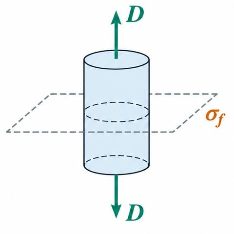
Applying (i) to a thin pillbox extending slightly into the material on each side gives $\mathbf D_{\text{above}}\cdot\mathbf a-\mathbf D_{\text{below}}\cdot\mathbf a=\sigma_f\,d$, where $\mathbf a$ points up. As $d\to0$ the edges and any volume charge contribute nothing:
(7.70) follows by the same argument from (ii).
3. Tangential components: a thin Amperian loop
A very thin loop straddling the surface gives $\mathbf E_{\text{above}}\cdot\mathbf l-\mathbf E_{\text{below}}\cdot\mathbf l=-\frac{d}{dt}\int\mathbf B\cdot d\mathbf a$. The flux through the thin loop vanishes as its width goes to zero, so the tangential $\mathbf E$ is continuous:
For (iv), with $\hat{\mathbf n}$ the unit normal pointing up, $I_{f,\text{enc}}=\mathbf K_f\cdot(\hat{\mathbf n}\times\mathbf l)=(\mathbf K_f\times\hat{\mathbf n})\cdot\mathbf l$. Only a surface current contributes, since a volume current gives zero in the thin limit (Fig. 7.50):
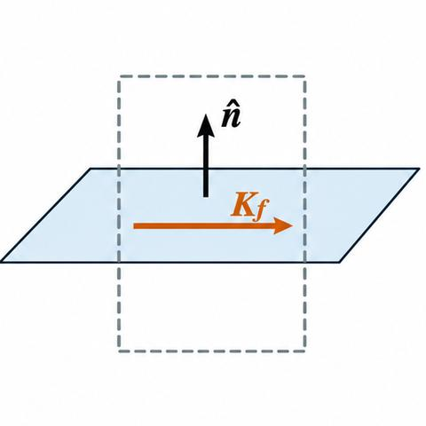
So the parallel components of $\mathbf H$ jump by an amount proportional to the free surface current.
4. Linear media
With no free charge or current at the interface (Eq. 7.74), the right-hand sides are zero. These conditions give reflection and refraction (Chapter 9).
Background: magnetic charge (7.3.4) and the rotating magnet (7.4)
1. Magnetic charge (§7.3.4, background)
There is a symmetry in Maxwell’s equations in free space ($\rho=0$, $\mathbf J=\mathbf 0$). Replacing $\mathbf E$ by $\mathbf B$ and $\mathbf B$ by $-\mu_0\epsilon_0\mathbf E$ turns the pair $\nabla\cdot\mathbf E=0$, $\nabla\times\mathbf E=-\partial\mathbf B/\partial t$ into $\nabla\cdot\mathbf B=0$, $\nabla\times\mathbf B=\mu_0\epsilon_0\partial\mathbf E/\partial t$, and back again.
The symmetry is broken by the charge term in Gauss’s law and the current term in Ampère’s law. If magnetic charge $\rho_m$ and magnetic current $\mathbf J_m$ existed, the equations would read (Eq. 7.53):
Both charges would be conserved (Eq. 7.54): $\nabla\cdot\mathbf J_m=-\partial\rho_m/\partial t$. Searches for magnetic monopoles have found none. Magnetic charge would explain why electric charge is quantised (Dirac; see Problem 8.21).
The force law assumed for a monopole is Coulomb’s law for magnetic charges, $\mathbf F=\frac{\mu_0}{4\pi}\frac{q_{m1}q_{m2}}{r^2}\hat{\mathbf r}$ (Eq. 7.55). Its application to moving monopoles is a problem in the book.
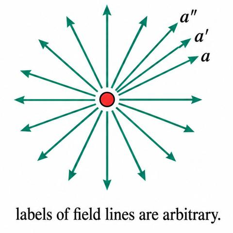
2. The field of a rotating magnet (§7.4, background)
Does a rotating magnet drag its field round with it? Faraday’s experiments with a disk and a magnet (Fig. 7.51) say that a magnet rotating about its symmetry axis does not drag its field: the field lines are stationary. A magnet rotating about a perpendicular axis does drag its field along. In 1912 Barnett concluded that the Earth’s magnetic field, as associated with the Earth’s rotation about its axis, does not rotate with the Earth.
In Maxwell’s theory the fields have physical reality; field lines are only a construct. The labelling of field lines has no physical content (Fig. 7.52), so the statement that field lines “rotate” is a choice of description. The magnetic case is subtle only because the Lorentz force uses the velocity of the charge relative to the field, so the frame matters. Footnote 36 corrects footnote 34: moving magnetic field lines do not induce electric fields; time-dependent fields do.